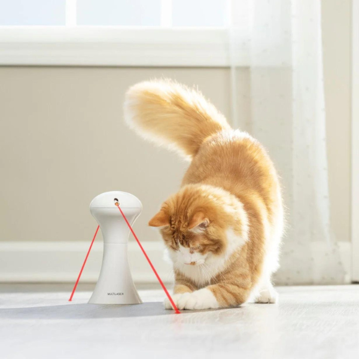
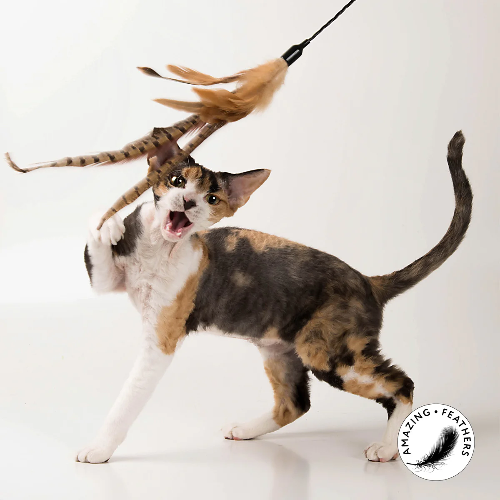
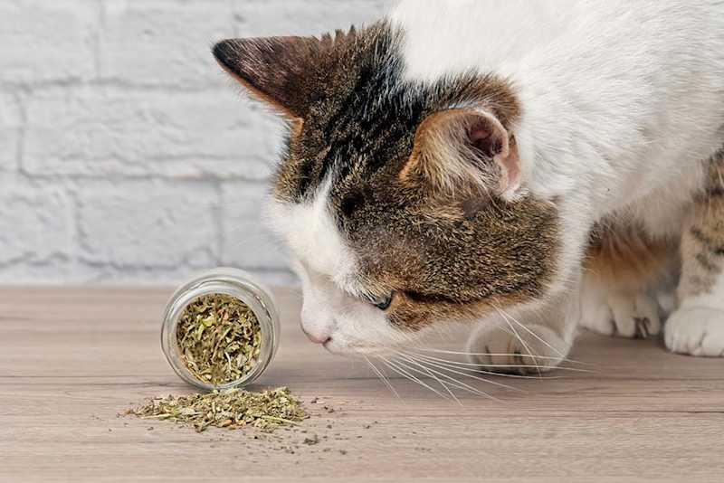
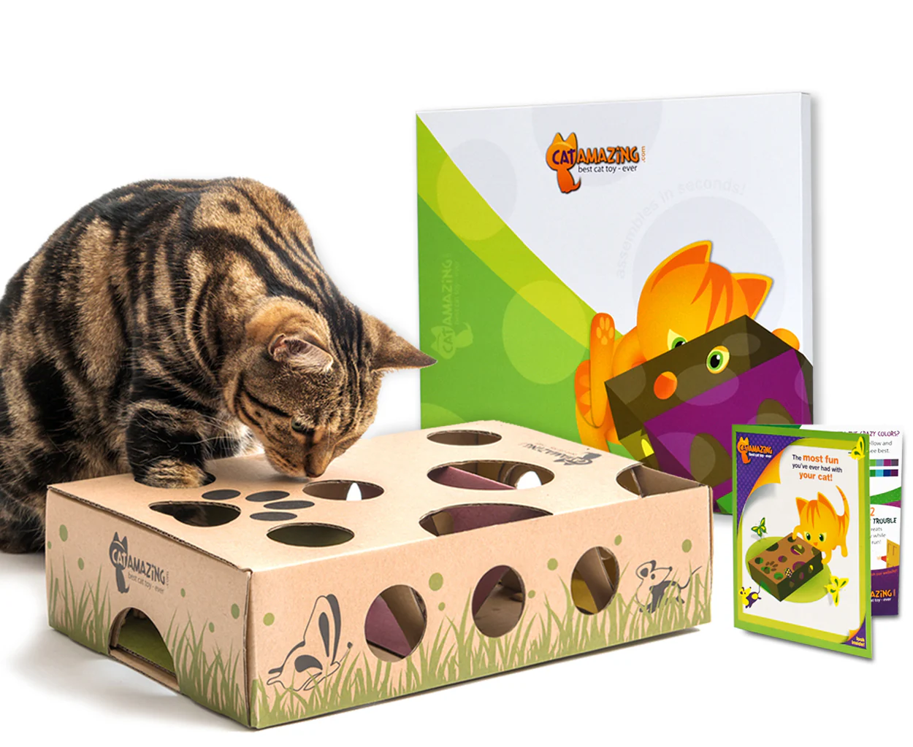
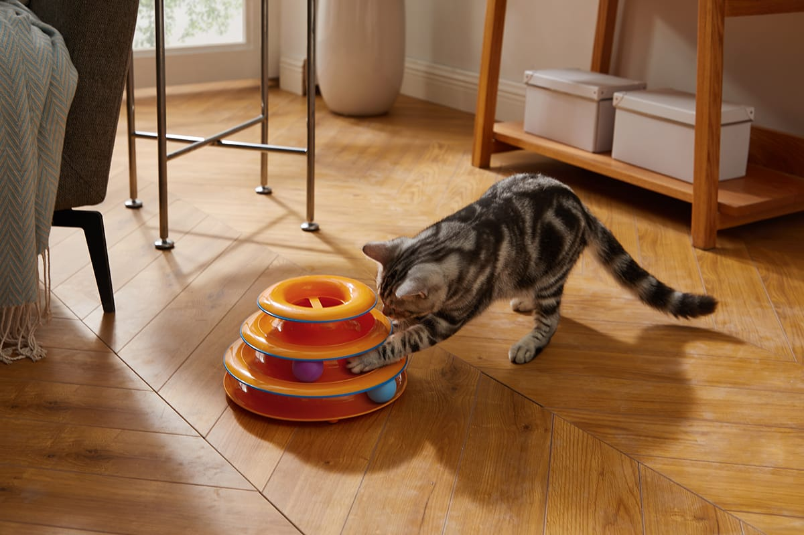

Keeping your cat entertained is essential for their physical and mental health. Here are some of the best toys for cats that will keep them engaged and happy.
1. Interactive Laser Pointer

Laser pointers are a classic toy that cats love. The moving light stimulates their hunting instincts and provides great exercise.
Tip: Always end the play session with a physical toy or treat to give your cat a sense of "catching" something.
2. Feather Wand

Feather wands mimic the movement of birds, making them irresistible to cats. They are perfect for interactive playtime.
Tip: Use the wand to encourage your cat to jump and run, providing both mental and physical stimulation.
3. Catnip Toys

Catnip toys are filled with dried catnip, which can excite and relax cats. They are great for solo play.
Tip: Not all cats react to catnip, so test a small amount first to see if your cat enjoys it.
4. Puzzle Toys

Puzzle toys challenge your cat's mind by requiring them to solve a problem to get a treat. They are excellent for mental stimulation.
Tip: Start with simple puzzles and gradually increase the difficulty as your cat gets better at solving them.
5. Ball Track Toys

Ball track toys feature balls that move around a track, providing endless entertainment for your cat.
Tip: Place the toy in a high-traffic area so your cat can play with it throughout the day.